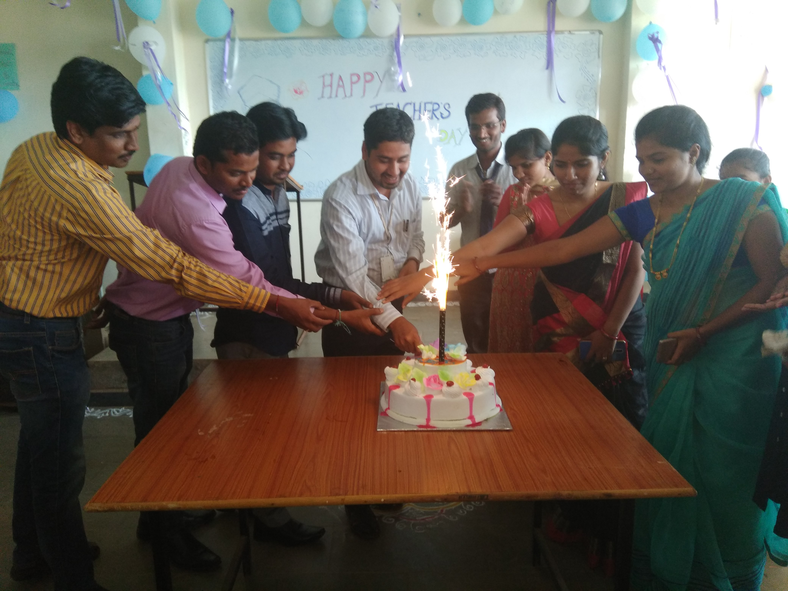
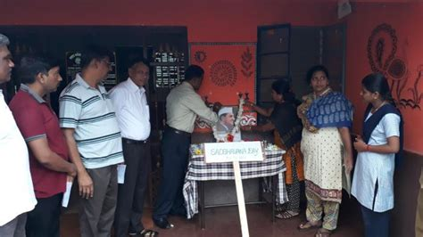
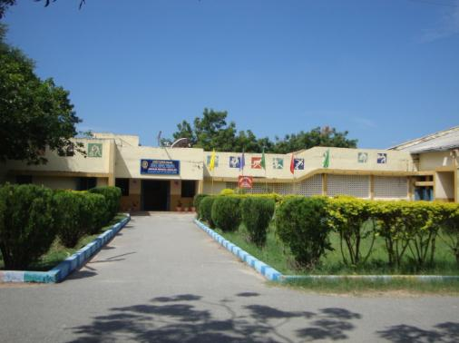
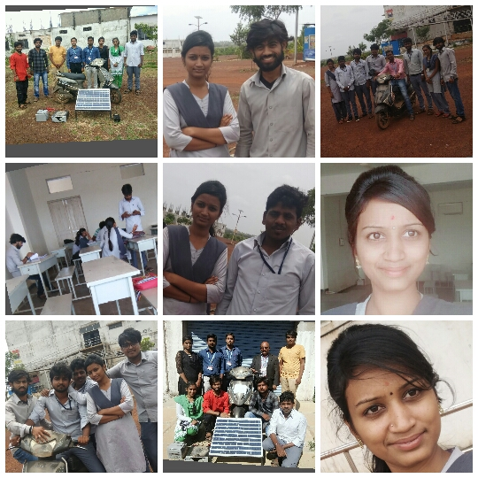

“Be yourself; everyone else is already taken.” ― Oscar Wilde;
“You've gotta dance like there's nobody watching, Love like you'll never be hurt, Sing like there's;
“Be the change that you wish to see in the world.” ― Mahatma Gandhi;
“No one can make you feel inferior without your consent.” ― Eleanor Roosevelt, This is My Story;
APJ ABDULKALAM
SWAMI VIVEKANAND
ROCKING STAR YASH
PARENTS
The way get started is to quit talking and begin doing.” – Walt Disney. This straight-to-business …
“The pessimist sees difficulty in every opportunity. The optimist sees opportunity in every difficulty.” …
“Don’t let yesterday take up too much of today.” – Will Rogers. Will Rogers was an American actor, …
“You learn more from failure than from success. Don’t let it stop you. Failure builds character.” – …
FAMILY AND LOVE
Family is a group of two, three or more persons living together in one home. Family can be small nuclear, big nuclear or joint family types according to the number of members in the family.
FAMILY
MY LOVE TAILER
Naveen Kumar Gowda, known by his stage name as Yash, is an Indian actor best known for his work in Kannada cinema. He began as an actor appearing on stage and in television shows in Kannada language. Yash made his feature film debut in 2007 with Jambada Hudugi, playing a supporting role. In his second film, Moggina Manasu, he played the male lead opposite wife Radhika Pandit. The film was a success and earned him the Filmfare Award for Best Supporting Actor. He went on to star in many com
GURU AND GURUPARAMPARA
Books are the quietest and most constant of friends; they are the most accessible and wisest of …
“The Voice. There is a voice inside of you. That whispers all day long, "I feel this is right for me, I …
“The mediocre teacher tells. The good teacher explains. The superior teacher demonstrates. The …
“Those who educate children well are more to be honored than they who produce them;


DEGREE
SCHOOL
TRAINING
TRAINING
A teacher is a person who helps others to acquire knowledge, competences or values. Informally the role of teacher may be taken on by anyone. In some countries, teaching young people of school age may be carried out in an informal setting, such as within the family, rather than in a formal setting such as a school or college. Some other professions may involve a significant amount of teaching. In most countries, formal teaching of students is usually carried out by paid professional teachers.
TEMPLE VISITED
A school is an educational institution designed to provide learning spaces and learning environments for the teaching of students under the direction of teachers. Most countries have systems of formal education, which is commonly compulsory. In these systems, students progress through a series of schools. The names for these schools vary by country but generally include primary school for young children and secondary school for teenagers who have completed primary education.

DEGREE
SCHOOL
TRAINING
A college is an educational institution or a constituent part of one. A college may be a degree-awarding tertiary educational institution, a part of a collegiate or federal university, an institution offering vocational education or a secondary school. In the United States, "college" may refer to a constituent part of a university or to a degree-awarding tertiary educational institution, but generally "college" and "university" are used interchangeably, whereas in the United Kingdom,
FRIENDS
Don’t walk in front of me… I may not follow. Don’t walk behind me… I may not lead. Walk beside …
“Friendship ... is born at the moment when one man says to another "What! You too? I thought that …
“A friend is someone who knows all about you and still loves you.” ― Elbert Hubbard. Like.
“Good friends, good books, and a sleepy conscience: this is the ideal life.” ― Mark Twain. Like.

DEGREE
SCHOOL
WORKSHOP TEAM
PROJECT TEAM
Friendship is a relationship of mutual affection between people. Friendship is a stronger form of interpersonal bond than an association. Friendship has been studied in academic fields such as communication, sociology, social psychology, anthropology, and philosophy. Various academic theories of friendship have been proposed, including social exchange theory, equity theory, relational dialectics, and attachment styles. Although there are many forms of friendship,


.jpg)